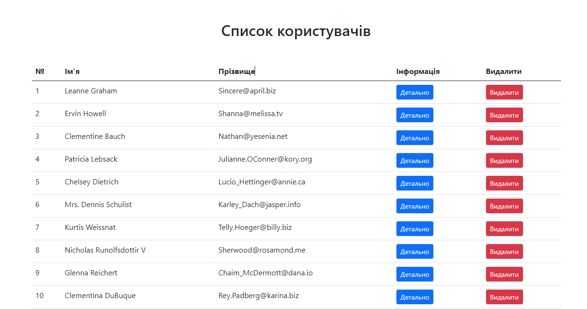
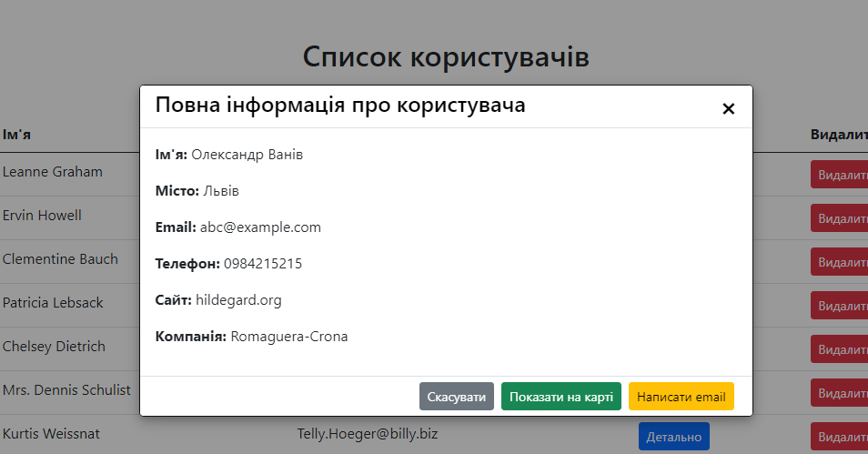
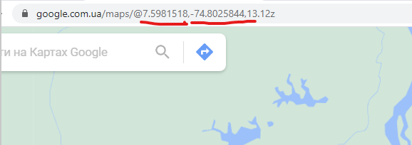
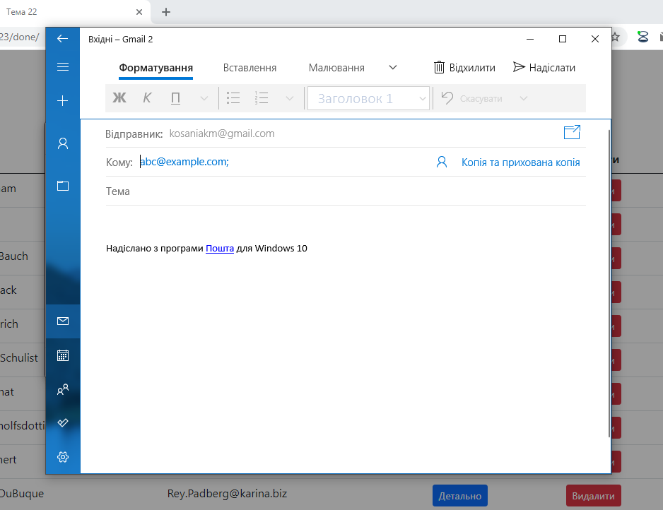
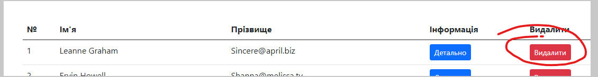

Тема 23
1. Використайте готову верстку для завдання: index.html, style.css.
2. Відобразіть користувачів зі даного масиву на сторінку array.js

3. При кліку на кнопку детально відобразіть модальне вікно з інформацією про конкретного коритувача.

4. Кнопка показати на карті повинна відправляти на карту з відповідними координатами корисутвача.

5. Кнопка надіслати повідомлення повинна відправляти повідомлення на пошту користувача.

6. Створіть функцію яка буде видаляти вибраного користувача.
